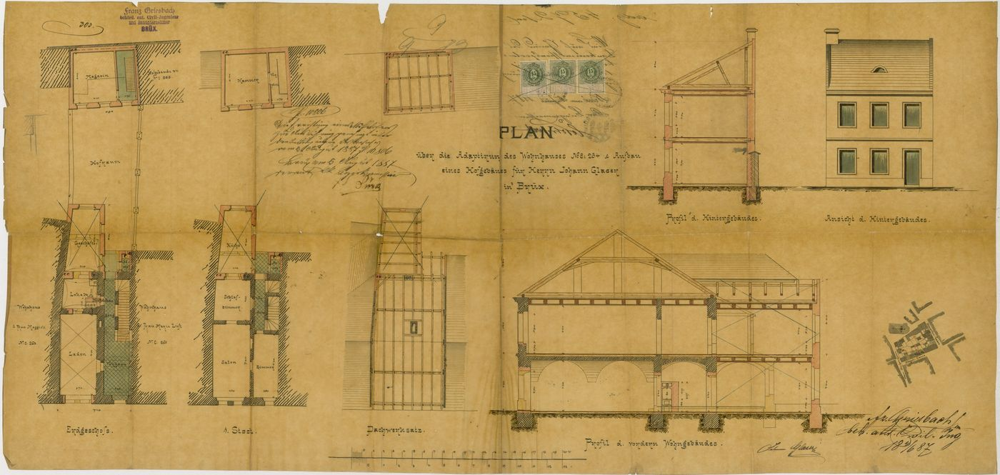
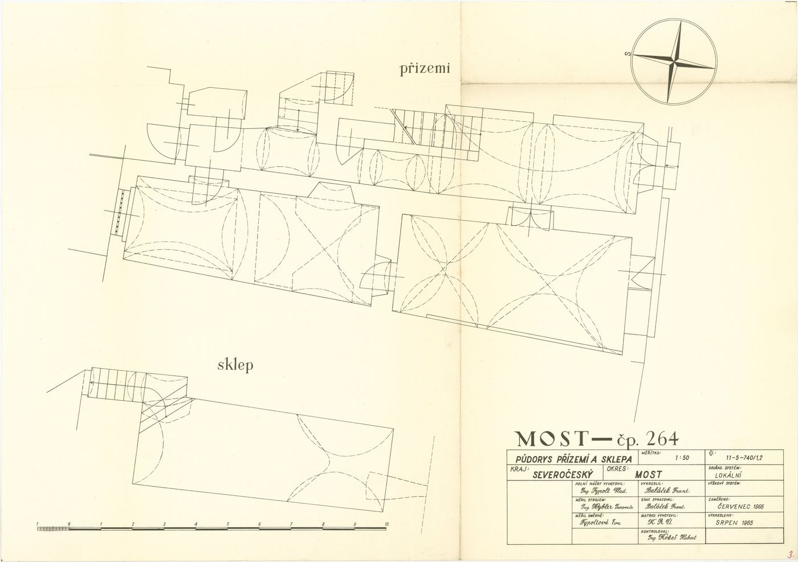
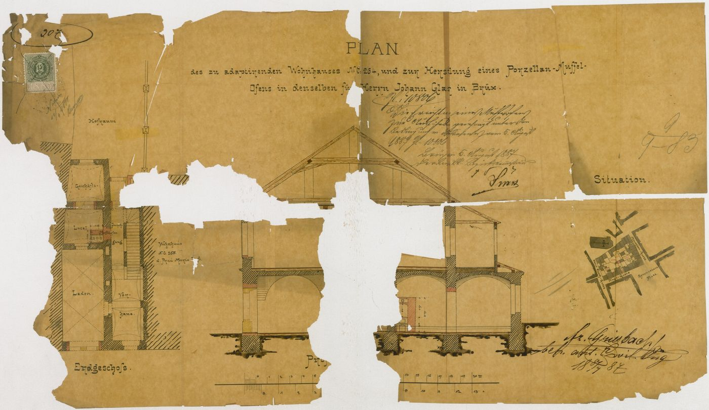
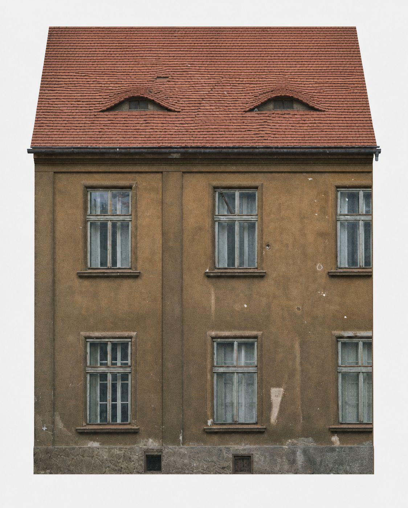
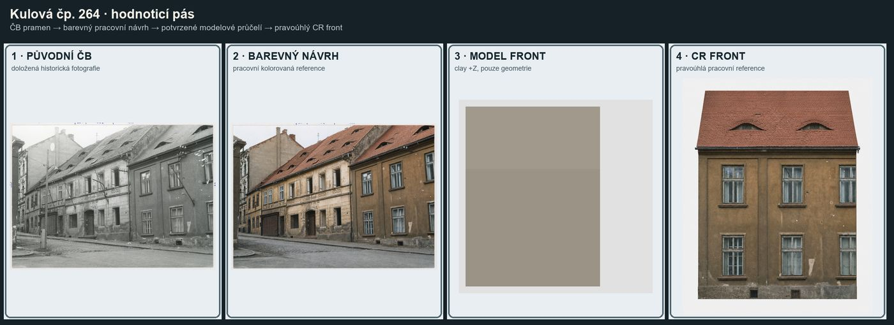
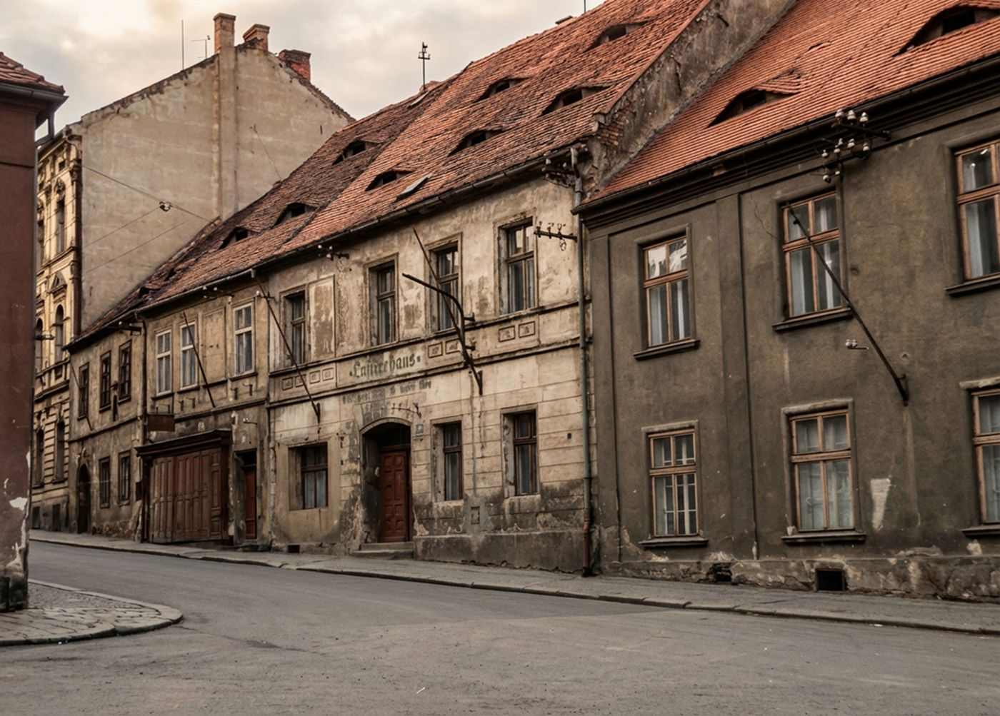
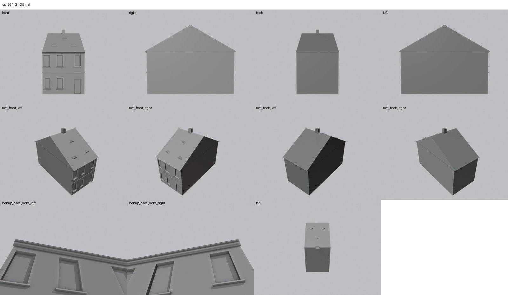

Identita domu
Úzký třiosý dům s vraty a třemi volskými oky.
Použité prameny: popsaný list 1887 se šířkou 7,4 m (cp_264_001), půdorys 1965, fotografie z roku 1969.
Přílohy v databázi (8)
Všechny přílohy struktury 264 v databázi Libuše, načtené 18. 10. 2026 a otevřené. Kliknutím otevřete větší náhled.


plán / výkres
SHA-256 f30db03b02fb…


plán / výkres
SHA-256 2855e8ce812b…


plán / výkres
SHA-256 1f51ea31f99b…

archivní karta
SHA-256 7e1c2e60a8ae…

odvozenina (kolorovaná / FRONT)
SHA-256 fa22e384e1ba…


odvozenina (kolorovaná / FRONT)
SHA-256 0a1d414cc0ce…


odvozenina (kolorovaná / FRONT)
SHA-256 370140209821…


odvozenina (kolorovaná / FRONT)
SHA-256 e8f25af82375…
Geometrie
| Revize geometrie | r3 |
|---|---|
| Poloha | GIS půdorys id 10 (ulice Kulová) |
| Šířka průčelí | 7,40 m |
| Výška okapu | 7,50 m (odhad) |
| Podlaží | 2 |
| Střecha podle pramenů | sedlová s volskými oky |
| Otvory / vikýře | 6 / 3 |
| Polygonů | 250 |
| Kontrola podkroví (19. 10. 2026) | prošla: vlasové zásahy do podkroví 0 ze 103 680 paprsků ze 120 pohledů; nekryté zdivo 0,00 m², střecha nad prázdnem 0,00 m² |
Kontrolní pohledy

Textury
zatím bez textur
Až Codex dodá texturovaný model, objeví se v prohlížeči nahoře volba Textury (Codex).
Hypotézy
Vše níže je model_hypothesis, provisional, locked: false.
- G1/G2 ground windows are a hypothesis (photo partly occluded; prior batch registered only U1-U3 and D1)
- facade identity (narrow 3-axis part vs. wide Lutherhaus front) provisional per prior reports
- depth/rear simplified
Soubory
- Geometrie čp. 264, GLB
- Pracovní model: F:\MOST\output\kulova_eave_fix_claude_2026-10-19\houses\cp264\r3\cp_264_G_r3.blend
- Plán modelu: F:\MOST\output\kulova_eave_fix_claude_2026-10-19\houses\cp264\geometry_plan.json